"Curious, focussed, and compassionate" is how my friends describe me. The virtue I value most is integrity; owning failure and seeking to use it as a mechanism for positive change. I relish a logical challenge or thought provoking debate and strive to engage with the present moment.
Over
Firmware Engineer: since 2023
Joining ABT as one of the first in-house firmware engineers gave me a unique opportunity to shape the daily running of the department. We were tasked with defining the future of the firmware platform at the company to accommodate bigger, more complex projects and our choices then allow us to support a wide range of products with varied requirements today. A key takeaway from that process was the importance of the quality of collaboration with suppliers.
A significant contribution I have made so far is to our proprietry library of reusable firmware modules. Having had reusability as one of our team's core principles from day one has allowed us to incrementally build this valueable resource as new project work has driven us to use different MCU peripherals and external ICs. With this mindset, maintaining useful documentation, explaining why something is a certain way rather than just stating what it does, has also been a priority and become as natural as writing the code itself.
I was the firmware owner for the first project that ABT embarked on under a new NPI process that was to be rolled out across the company for the future. I was at the table at the first engineering meeting with the customer, have written the majority of the code, and will be supporting the product through to mass manufacture. This experience has been highly valueable in improving my communication from working with multiple other teams, my ability to generate meaningful requirements through conversations directly with the customer, and my creativity navigating unexpected issues.
Electronics Engineer: 2023
Onboarding quickly was important in the rapidly evolving environment at Mytos, whether learning how to use new software or understanding the user stories and international standards that were driving requirements. Being the only electronic engineer at my level meant a wide variety of technical and organisational work with new challenges daily.
Multi-threading was imperative, dynamically managing time across projects I had ownership of and supporting asynchronously on new failure modes. Pushed hard by the constraints of ambitious company-wide deadlines, I strengthened my context-switching skills; regularly designing or reviewing PCBs in the morning and writing firmware in C++ after lunch.
The company had an excellent culture of feedback, so I was able to address issues quickly and gain confidence in the areas I was excelling in. Shining a light on areas of personal and professional improvement with a regular cadence allowed me to consciously improve my cross-team communication and leadership skills. I was consistently praised by colleagues for my attention to detail, knowledge of EE principles, and enthusiasm towards my work.

Previously 
Embedded Engineer: 2021 to 2023
An important contribution I made was a Linux-based remote monitoring system. Initially an offline database of sensor data used to glean insights into failures after product deployments, it evolved into a real-time 4G connected implementation with a Grafana dashboard. I was responsible for gathering requirements, the hardware and software architecture, and taking the design from prototype to custom PCB. This built out my understanding of Linux command line tools and systemd, CAN bus, PostgreSQL databases, multi-threaded applications in Python, and networking fundamentals.
I was also part of the team that deployed AFC Energy's first Power Tower generator on a construction site in Spain. As the only representative from the electronics team present, I was responsible for data monitoring, problem solving of all electrical issues, including diagnosing an earthing issue with the site's own mains power distribution, and being the main knowledge holder for generator operation. This experience reinforced my passion for hands-on and tangibly beneficial work for the customer.

Sensors Engineer: 2019 to 2021
Graduate Engineer: 2018 to 2019
At Dyson, I worked on technical design tasks across the full lifecycle of products, which gave me an appreciation of the value of investing time upfront and catching issues early. I travelled abroad on multiple occasions, including an international sensor conference and a key supplier at their headquarters to collaborate with their engineers. In parallel, I mentored several undergraduates who interned in my team by writing their project plans, managing their day-to-day needs, and providing feedback to their academic supervisors.
A key piece of work I suggested and delivered was a custom visualisation tool written in Python, replacing an outdated Excel-based system for analysing gigabytes of test data. The vastly improved efficiency led to an increase in both the quantity of tests and quality of insight that was possible. Detailed documentation allowed its use to continue by the test engineers themselves after I left the company.
Junior Research Engineer: 2015
I completed a year's engineering placement at BAE Systems, during which I mentored a team at a local girls school with their Engineering Education Scheme entry.

MEng Electronics: 2013 to 2018
Achieved a
Volunteer Construction Worker: 2023
One month career break to give something back and mentally recalibrate. Worked on two projects in schools in rural Nepal restoring a canteen and constructing a worship building. The experience left me with a profound sense of humility and gratitude that I am still able to draw on.
References available on request.
Updated 2026-07-05